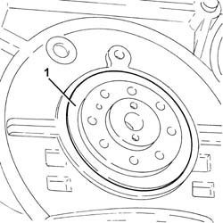
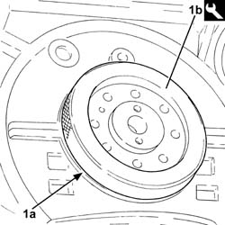

1020D40 flywheel end oil seal- r+r with flywheel removed
- Path
- Procedures > 10 ENGINE UNIT > 1020 CRANKCASE SUMP AND COVERS > 1020D OIL SEALS ON CRANK SHAFT > 1020D40 flywheel end oil seal- r+r with flywheel removed
- Kind
- repair procedure (removal / refitting; the operation number is the code)
- Applies to
- engines: 1.3 JTD 16v; all production periods
- Interactive page
- https://sloeber94.github.io/elrnDB-fPnd/en/#/2752568
Applies to: engines: 1.3 JTD 16v; all production periods
 Removing
Removing
 Refitting
Refitting1. Release the flywheel side oil seal from its housing.

Applies to: engines: 1.3 JTD 16v; all production periods
Refitting
Removing1. Place a new crankshaft rear oil seal (1a) in position using the tool (1b).
 | Name | Country |
|---|---|---|
1b | Fitting tool | 1.870.900.200 |
